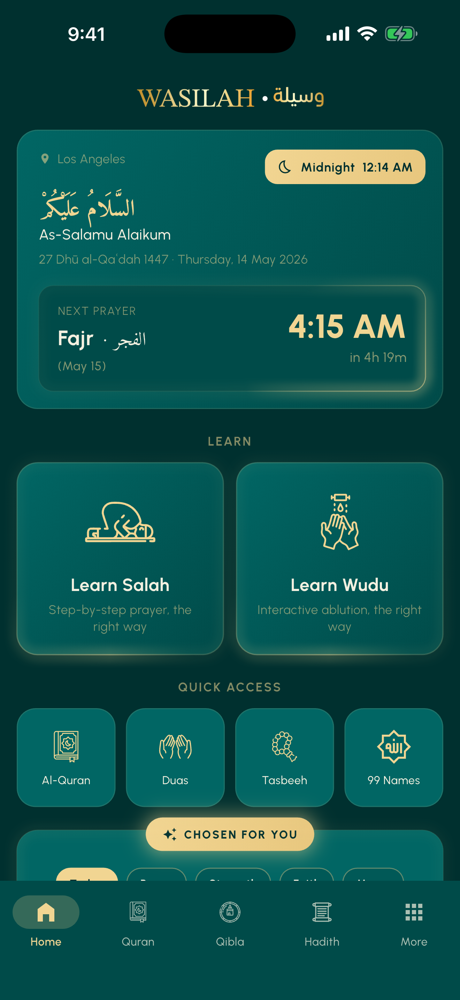
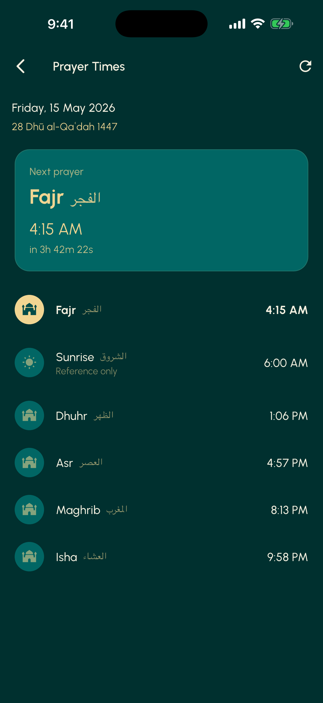
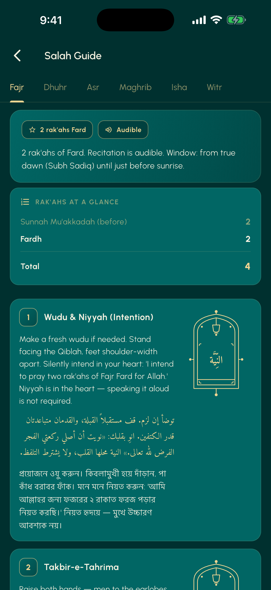
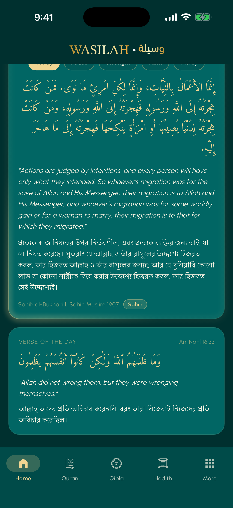
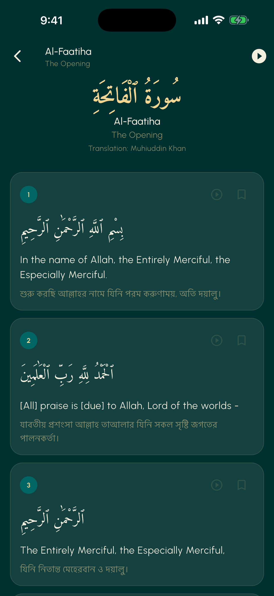
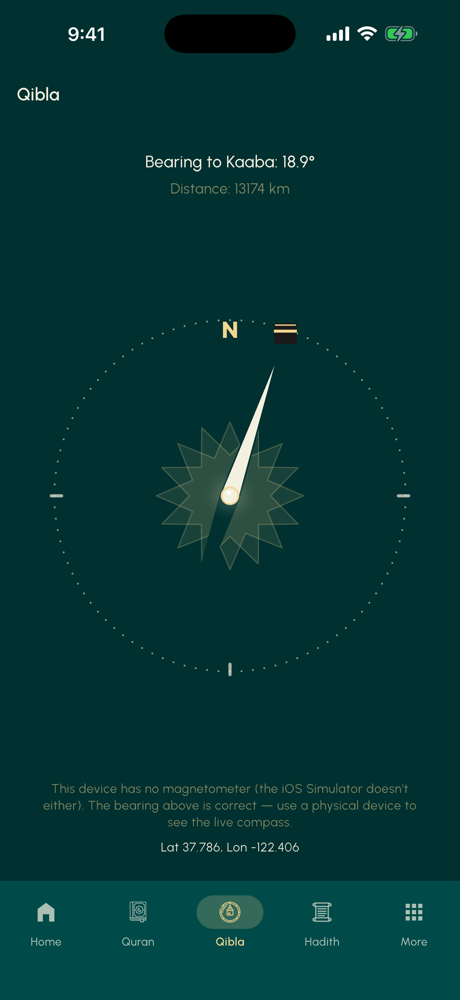

Wasilah.
An Islamic companion app for Bangladeshi Muslims. Designed solo, shipped to two stores, used by real families.
- live since
- May 2026
- stores
- Play + iOS
- market
- Bangladesh-first
- price
- free, forever
A Bangla-first Islamic app, not a localized import.
Bangladesh has over 150 million Muslims. Most popular Islamic apps were built for Arabic-speaking or Indonesian audiences and translated into Bangla as an afterthought. The brief was the opposite: design for Bengali Muslim users first. Local prayer time calculation methods, BDT Zakat, Bangla as a primary surface language, hadith and Quran access in the three scripts that actually matter here, English alongside Bangla and Arabic.
No monetization plan. No upgrade tier. The KPI is reach.
The sacred-vs-daily font rule.
Not every line of text in an Islamic app carries the same weight. The Adhan does. A settings toggle does not. Most apps in this category treat all copy with the same serif throughout, which flattens what should be a hierarchy of reverence.
Wasilah uses two type families on purpose. EB Garamond is reserved for sacred moments only: the Adhan call, dua text, the app tagline, hadith body. Geist Sans handles everything else: navigation, time labels, prayer countdowns, settings. The split is invisible until you notice it, and then it changes how the app feels to use.


Three App Store rejections, three lessons.
Apple App Review rejected Wasilah three times across builds 5 through 9. Each rejection taught me something specific about designing for regulated markets. I am naming the citation codes here because I think most portfolios hide their rejections, and that absence is itself a signal.
-
Build 5 - 5.1.1(iv) - location permission pre-prompt UX
Apple flagged the way we asked for location permission as overreaching the iOS pattern. The fix was to remove our custom pre-prompt and let the system dialog appear in the moment the user requested a prayer time. Lesson: in regulated markets, the platform's own pattern is the safest brand asset you have.
-
Build 9 - guidance 4.3 - code similarity
An Apple advisor flagged similarity to other Islamic apps at the binary level. The fix required swapping out shared third-party libraries for Apple-first-party APIs: CLLocationManager, AVQueuePlayer, UNUserNotificationCenter, WidgetKit, URLSession, on-device PrayTimes. Lesson: differentiation in regulated submission queues is structural, not visual. The code under the hood matters as much as the brand on top.
-
What both rejections demanded
Pre-submission discipline. Reading the full guideline citation rather than the summary email. Treating App Review as a real audience with their own brief, not as a customs official to be hurried past. This is the same posture you need for any market with regulatory gatekeepers, which is most of the markets I want to work in next.
v1.1 to v1.2: the compact-density rebuild.
The v1.1 home screen was the first thing real users complained about. The dashboard was technically correct and emotionally cold. Six tiles of equal weight, no center of gravity, no clear answer to the question "what now."
v1.2 rebuilt around a single anchor: the next prayer. Everything else demoted to secondary. A Salah Tracker added because the most common request from users was "show me whether I prayed today." A light mode shipped because the original dark-only choice excluded readers who use their phones outdoors at Asr and Maghrib. The Asr Hanafi calculation method was added after Bangladeshi users pointed out the Shafi default did not match their daily practice.




Most of the redesign was subtraction, not addition. Removing what felt like a "complete" feature set and accepting that an Islamic app is closer to a habit than a tool.
The honest gap.
As of this writing, Wasilah has 23 currently installed users, 38 lifetime installs, and roughly 95 percent of the audience in Bangladesh. wasilah.site pulls a handful of visitors a week against a category-median in the hundreds. I am publishing this case study at this size because I would rather show how I think than wait until the numbers are vanity-tier.
A second case study is planned for late 2026 with six to twelve months of rolling retention data, the v1.3 redesign findings, and whatever the iOS launch teaches me. Until then, this page is the work in flight.
If you are hiring brand or marketing for a Muslim-consumer product, especially in the religious-tourism and hospitality space in KSA, I would like to hear from you. mumullickm@gmail.com.